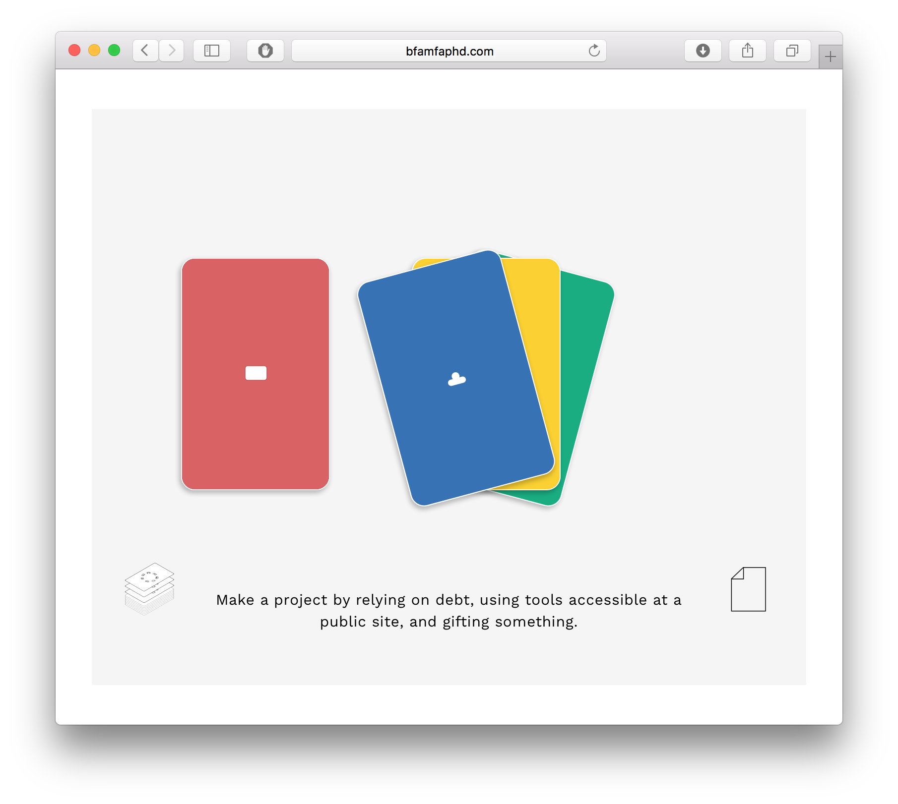

Making and Being Design Assets
I've been working closely with Caroline Woolard and Susan Jahoda of BFAMFAPhD for over two years as the designer of Making and Being. Making and Being is a multi-platform pedagogical project which offers practices of collaboration, contemplation, and social-ecological analysis for visual artists. Making and Being is for arts educators who want to connect art to economy; for students who want to make artworks that reflect the conditions of their own production. Making and Being is a book, a series of videos, a deck of cards, and an interactive website with freely downloadable content. Our project was included in The Visible Hand at CUE Art Foundation. We are going to be in residence at Pratt Institute's Project Third Teaching Artist Residency this summer.


